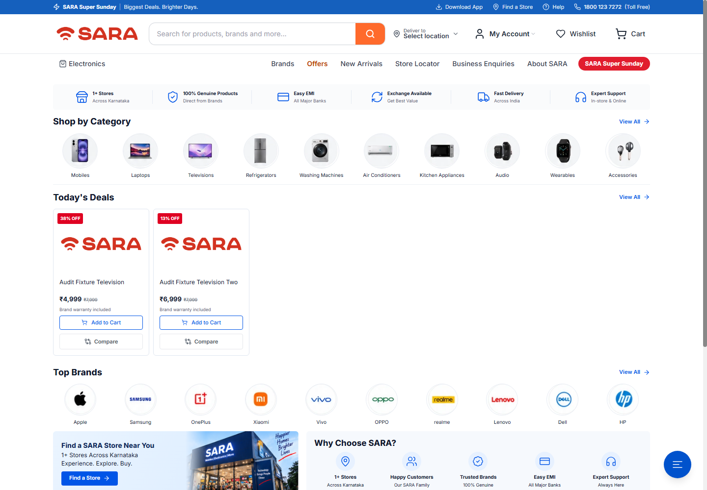

Discover the store
Home /The journey starts with a need: a television, appliance or another electronics product. The homepage gives the customer a search box, categories, deals and brand shortcuts instead of requiring them to know an exact product URL.
- Customer action
- Browse a category or search for a product, then open a promising result.
- What the store provides
- Product cards with prices, savings and quick shopping actions.
Verified: mobile search found the synthetic catalogue product. The homepage was also assessed at all five audit viewport sizes.
